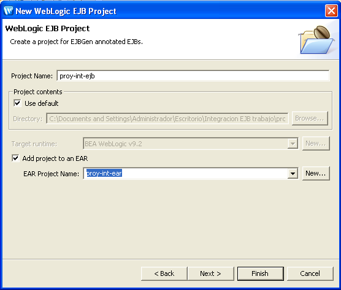
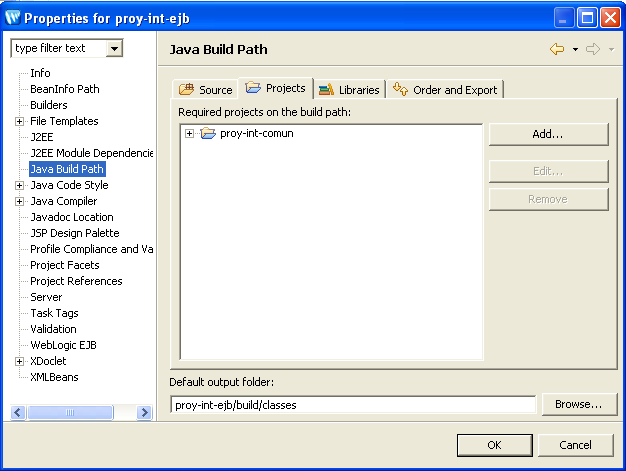
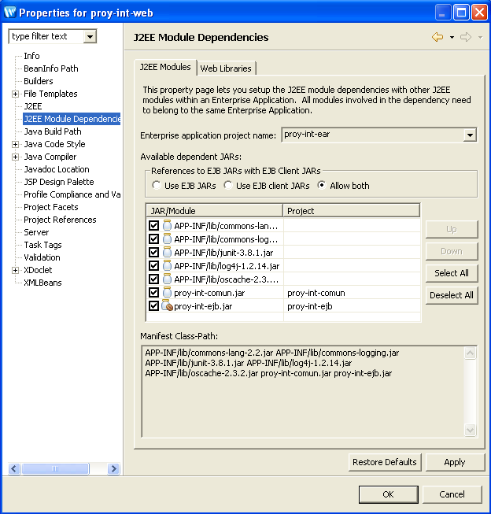

Componentes EJB
Introducción
El objetivo de esta sesión de integración es incorporar una capa de EJB que asuma la lógica de negocio que implementa actualmente el proyecto común en las clases BOs y DAOs. El objetivo final será sustituir las llamadas a los BOs por llamadas EJBs en aquellas funcionalidades en las que haya que manejar transaccionalidad.
Tal y como terminó la integración del proyecto web, la lógica de negocio ha quedado repartida entre los BOs y los DAOs. En los DAOs ha quedado el código para gestionar las transacciones, y su gestión se realiza con JDBC (con los métodos autocommit(false), commit() y rollback() de la conexión). Esto hace que los DAOs sean poco flexibles y poco reutilizables. En concreto, el DAO OperacionDAO se hace cargo de toda la lógica de negocio que conlleva la actualización transaccional de la propia tabla operacion y también de la actualización del estado del usuario en la tabla usuario. Vamos hacer que la capa EJB se encarge de esta gestión. Para ello, vamos a crear un EJB OperacionBean que acceda a los DAO OperacionDAO (refactorizado) y UsarioDAO e implemente la lógica de negocio repartida en la actualidad en las clases OperacionBO y OperacionDAO.
Paso previo: problema con los tipos enumerados
Como paso previo, tenemos que arreglar un pequeño problema. Los EJB (en concreto, la especificación CORBA-RMI en la que se basan) no soportan en la actualidad los tipos enumerados (introducidos en Java 5), por lo que debemos sustituir todas las declaraciones de tipos enumerados por el tipo String y todos los valores de variables de esos tipos por constantes definidas en la clase las clases internas (inner classes) Constantes.Operacion y Constantes.Usuario del paquete DAO.
En la página del curso está disponible una solución inicial del proyecto de integración en la que se hecho este cambio. Incluimos a continuación una lista de los cambios a realizar, por si queréis continuar con vuestra versión.
Elimina las clases:
es.ua.jtech.proyint.to.EstadoUsuario es.ua.jtech.proyint.to.TipoOperacion es.ua.jtech.proyint.to.TipoUsuario
Modifica las declaraciones de tipos anteriores por Strings en todas las clases.
Añade en el paquete es.ua.jtech.proyint.dao la clase Constantes con el siguiente código en el que se definen las clases internas Operacion y Usuario y sus constantes asociadas:
public class Constantes {
public static class Operacion {
public static String TIPO_RESERVA = "reserva";
public static String TIPO_PRESTAMO = "prestamo";
public static String TIPO_MULTA = "multa"
}
public static class Usuario {
public static String ESTADO_BAJA = "baja";
public static String ESTADO_ACTIVO = "activo";
public static String ESTADO_RESERVA = "reserva";
public static String ESTADO_PRESTAMO = "prestamo";
public static String ESTADO_MOROSO = "moroso";
public static String TIPO_SOCIO = "socio";
public static String TIPO_PROFESOR = "profesor";
public static String TIPO_BIBLIOTECARIO = "bibliotecario";
public static String TIPO_ADMINISTRADOR = "administrador";
}
}
Arregla todos los errores:
- En las clases que utilizan JDBC hay que cambiar:
Enum.valueOf(EstadoUsuario.class, rs.getString("estadoUsuario"))
Enum.valueOf(TipoUsuario.class, rs.getString("tipoUsuario"))
Enum.valueOf(TipoOperacion.class, rs.getString("tipoOperacion")
por:
rs.getString("estadoUsuario")
rs.getString("tipoUsuario")
rs.getString("tipoOperacion")
- Sustituye los valores del estilo TipoOperacion.prestamo por las constantes: Constantes.Operacion.TIPO_PRESTAMO.
- Sustituye las llamadas a estado.toString() por estado
- Sustituye las comparaciones
TipoUsuario.socio == usuario.getTipo()
por
usuario.getTipo().equals(Constantes.Usuario.TIPO_SOCIO)
- En AccionComun.java sustituir
usuario.getTipo() == tipo
por
usuario.getTipo.equals(tipo)
Refactorización de la capa DAO
Tal y como hemos comentado en la introducción, el objetivo principal de esta sesión del proyecto de integración es la inclusión de una capa de EJB con el EJB OperacionBean que implemente toda la lógica de negocio que está repartida entre las clases OperacionBO y OperacionDAO.
Para ello debemos transformar las clases DAO que van a ser usadas por el EJB (en este caso IOperacionDAO y OperacionJDBCDAO) para que realicen operaciones atómicas y no incluyan la lógica de negocio ni gestión de transacciones.
Podríamos hacerlo de varias formas, pero lo más sencillo es crear en el proyecto común unas clases nuevas denominadas IOperacionAtomicaDAO y OperacionAtomicaJDBCDAO que hagan este papel. Así mantenemos las clases antiguas para que sigan funcionando correctamente las clases que las usen.
A continuación listamos el código de la clase IOperacionAtomicaDAO que muestra la interfaz a implementar:
package es.ua.jtech.proyint.dao.operacion;
import java.util.Date;
import java.util.List;
import es.ua.jtech.proyint.dao.DAOException;
import es.ua.jtech.proyint.to.LibroTO;
import es.ua.jtech.proyint.to.OperacionTO;
public interface IOperacionAtomicaDAO {
public String addReserva(String login, String isbn, Date ffin)
throws DAOException;
public int deleteReserva(String idOperacion)
throws DAOException;
public String addPrestamo(String login, String isbn, Date ffin)
throws DAOException;
public String addMulta(String login, String isbn, Date ffin)
throws DAOException;
public void cierraOperacion(String idOperacion)
throws DAOException;
public OperacionTO selectOperacion(String idOperacion)
throws DAOException;
public List<OperacionTO> selectTodosLibros()
throws DAOException;
public List<OperacionTO> selectReservas()
throws DAOException;
public List<OperacionTO> selectPrestamos()
throws DAOException;
public List<LibroTO> selectDisponibles()
throws DAOException;
public int selectOperacionesActivas(String login, String tipo)
throws DAOException;
}
La diferencia fundamental de esta nueva implementación con respecto a la anterior es que las operaciones de actualización de esta versión del DAO (addReserva, deleteReserva, addPrestamo, addMulta, cierraOperacion) sólo tocan la tabla "operaciones" de la BD. Esto va a simplificar mucho la implementación, ya que toda la lógica de negocio y la gestión de transacciones la vamos a realizar en el EJB.
Algunos cambios concretos de esta nueva interfaz con respecto a la antigua son los siguientes:
- No se utiliza la fecha actual en los parámetros. Consideramos que la gestión de la fecha actual debe de realizarse dentro de la capa DAO (utilizando la función now() de SQL o alguna función similar de la capa de persistencia utilizada) y no en la capa de negocio.
- Se han simplificado los métodos de la clase, ya que ahora las actualizaciones consisten sencillamente en añadir una operación, en eliminarla (sólo en el caso de las reservas) o en cerrar una operación (poner como fecha fin real la fecha actual del sistema de persistencia). También se han cambiado el nombre de las operaciones, para reflejar su carácter elemental.
- Se han eliminado los métodos que implementaban lógica de negocio con múltiples operaciones y gestión de transacciones, como pasaReserva2Prestamo o devolverPrestamoConMulta.
La implementación de las operaciones de actualización es muy sencilla, si consultas la versión antigua del DAO. A continuación listamos como ejemplo la operación cierraOperacion:
public void cierraOperacion(String idOperacion) throws DAOException {
Connection conn = null;
PreparedStatement st = null;
try {
String sql = "update operacion set ffin=now() where idOperacion=?";
conn = FactoriaFuenteDatos.getInstance().createConnection();
conn.setAutoCommit(false);
st = conn.prepareStatement(sql);
st.setString(1, idOperacion);
st.executeUpdate();
st.close();
} catch (SQLException sqle) {
throw new DAOException("Error en el delete de operacion", sqle);
} finally {
try {
if (st != null) {
st.close();
st = null;
}
} catch (SQLException sqlError) {
throw new RuntimeException("Error cerrando las conexiones",
sqlError);
}
}
}
Implementa todos los métodos de actualización restantes de la interfaz, dejando los métodos de consulta sin modificar (cópialos de la versión normal del DAO).
Terminamos añadiendo en la clase FactoriaDAOs un método para obtener el OperacionAtomicaJDBCDAO:
En FactoriaDAOs:
public IOperacionAtomicaDAO getOperacionAtomicaDAO() {
return new OperacionAtomicaJDBCDAO();
}
Creación de la capa EJB y del Business Delegate
Una vez modificada la capa de acceso a datos, pasamos a implementar el EJB OperacionBean que implemente toda la lógica de negocio que está repartida entre las clases OperacionBO y OperacionDAO.
Crea el proyecto EJB "proy-int-ejb" añadiéndolo al EAR:

Configura el buildpath del proyecto EJB para incluir el proyecto común:.

Crea el paquete "es.ua.jtech.proyint.beans" en el proyecto EJB. Crea en el paquete el bean de sesión OperacionBean con las siguientes características:
- Nombres JNDI remoto y local: OperacionBean y OperacionBeanLocal
- Nombres de interfaces remotas y locales: Operacion, OperacionHome, OperacionLocal y OperacionLocalHome
- Gestión de transacción global del EJB: REQUIRED
Crea en el EJB los métodos remotos y locales pasaReserva2Prestamo y listadoPrestamo que implementarán esas operaciones de la capa de negocio.
El resultado será algo así cómo:
// imports y anotaciones
public class OperacionBean extends GenericSessionBean
implements SessionBean {
private static final long serialVersionUID = 1L;
private static Log logger = LogFactory
.getLog(OperacionBean.class.getName());
public void ejbCreate() {
}
@RemoteMethod()
@LocalMethod()
public String pasaReserva2Prestamo(String idOperacion) {
return null;
}
@RemoteMethod()
@LocalMethod()
public List<OperacionTO> listadoPrestamos() {
return null;
}
}
Recordemos que en la estructura del proyecto todos los objetos de negocio implementan la interfaz correspondiente y que una factoría se encarga de crearlos y pasárselos a la capa web.
Según este planteamiento habría que hacer que el EJB implementara la interfaz IOperacionBO, ya que es quien va a implementar todas las operaciones de negocio. El problema que nos encontramos es que la clase anterior no es usada por el cliente (recuerda el funcionamiento de los EJB). Las clases usadas por los clientes son las clases interfaz (local: OperacionLocal y remota: Operacion) que son generadas a partir de las anotaciones. Estas clases son las que deberían implementar la interfaz, pero no existe ninguna anotación ni ningún atributo que nos permita especifcarlo (este es uno de los ejemplos de los problemas derivados de EJBs que no son POJOs).
La solución que hemos encontrado es utilizar el patrón business delegate creando el POJO OperationDelegate que implementa la interfaz de la lógica de negocio IOperacionBO y realiza las llamadas al EJB, ocultando su complejidad.
En el método de creación del OperacionDelegate debemos obtener un acceso local al EJB (OperacionLocal) que usaremos en las llamadas a sus métodos de negocio.
Crea, por tanto, la clase OperacionDelegate en el proyecto EJB (en el paquete es.ua.jtech.proyint.ejb.delegate):
package es.ua.jtech.proyint.delegate;
// imports...
public class OperacionDelegate implements IOperacionBO {
private OperacionLocal operacionEJB;
public OperacionDelegate() {
try {
Context jndiContext = new InitialContext();
OperacionLocalHome home = (OperacionLocalHome)
jndiContext.lookup("OperacionBeanLocal");
operacionEJB = (OperacionLocal) home.create();
} catch (Exception e) {
throw new RuntimeException("Error al obtener el EJB", e);
}
}
public String pasaReserva2Prestamo(String idOperacion) {
return operacionEJB.pasaReserva2Prestamo(idOperacion);
}
public List<OperacionTO> listadoPrestamos() {
return operacionEJB.listadoPrestamos();
}
...
Falta hacer que la factoría de objetos de negocio devuelva el business delegate. Al ser una factoría que va a devolver objetos que llaman a EJBs, debemos colocarla en el proyecto EJB.
Copia la clase "FactoryBOs" del proyecto común al proyecto EJB en el paquete es.ua.jtech.proyint.ejb.bo) y modifícala para que el método getOperacionBO devuelva un OperacionDelegate. Elimina el resto de métodos que devuelven otros tipos de BOs, porque esta clase sólo va a trabajar con delegates de EJB.
En el proyecto EJB:
package es.ua.jtech.proyint.ejb.bo;
// imports ...
public class FactoriaBOs {
private static FactoriaBOs me = new FactoriaBOs();
private FactoriaBOs() {
}
public static FactoriaBOs getInstance() {
return me;
}
public IOperacionBO getOperacionBO() {
return new OperacionDelegate();
}
}
En este momento, ya tenemos todo listo para implementar los métodos de negocio en el EJB, basándonos en la clase OperacionBO del proyecto común y añadiendo el código relacionado con la transacción que hemos eliminado del OperacionDAO original.
Recordemos que hemos comenzado por las siguientes dos operaciones:
- pasaReserva2Prestamo
- listadoPrestamos
Vamos a empezar por implementar la operación más sencilla de las dos, listadoPrestamos. Añadimos al EJB el código para obtener y guardar en una variable de instancia el objeto OperacionAtomicaJDBCDAO e implementamos la operación haciendo una llamada al método correspondiente de este objeto:
Añadimos en el código del EJB OperacionBean:
private FactoriaDAOs factoriaDAOs;
private IOperacionAtomicaDAO operacionAtomica;
public void ejbCreate() {
factoriaDAOs = FactoriaDAOs.getInstance();
operacionAtomica = factoriaDAOs.getOperacionAtomicaDAO();
}
// Métodos de negocio
@RemoteMethod()
@LocalMethod()
public List<OperacionTO> listadoPrestamos() {
List<OperacionTO> listaOperaciones = null;
try {
listaOperaciones = operacionAtomica.selectPrestamos();
} catch (DAOException e) {
e.printStackTrace();
throw new EJBException();
}
return listaOperaciones;
}
}
Vamos ahora a implementar la clase de pasaReserva2Prestamo, que debe realizar la misma lógica de negocio que el método llamado igual de la clase OperacionBO del proyecto común y en la que debemos usar la nueva clase DAO atómica IOperacionAtomicaDAO.
/**
* TODO Falta cambiar el estado del usuario.
*/
@RemoteMethod()
@LocalMethod()
public String pasaReserva2Prestamo(String idOperacion)
throws OperacionException, OperacionCaducadaException {
if (idOperacion == null) {
throw new IllegalArgumentException(
"Se esperaba identificador de la operacion");
}
String result = null;
// Comprobamos que la reserva no ha caducado y que realmente
// es una reserva
OperacionTO op = null;
try {
op = operacionAtomica.selectOperacion(idOperacion);
} catch (DAOException daoe) {
throw new OperacionException(
"Error recuperando datos de la operacion", daoe);
}
Calendar cal = GregorianCalendar.getInstance();
Date ahora = cal.getTime();
if (op.getFechaFin().before(ahora)) {
System.out.println("voy a lanzar una excepción");
throw new OperacionCaducadaException(
"La fecha de la reserva ha caducado");
}
if (!(op.getTipo().equals(Constantes.Operacion.TIPO_RESERVA))) {
throw new OperacionException(
"Se esperaba una operacion con estado de reserva");
}
// Calculamos el numero de dias que tiene validez el prestamo
// (Socio = 7, Profesor = 30)
Date ffin = DateUtils.addDays(ahora,
this.calculaNumDiasPrestamo(op.getUsuario().getTipo()));
String login = op.getUsuario().getLogin();
String isbn = op.getLibro().getIsbn();
// Transacción
try {
operacionAtomica.cierraOperacion(idOperacion);
result = operacionAtomica.addPrestamo(login, isbn, ffin);
} catch (DAOException e) {
e.printStackTrace();
// Lanzamos una EJBException para indicar al contenedor
// que el método ha fallado y que hay que deshacer
// la transacción
throw new EJBException(
"Error realizando el paso de reserva a prestamo", e);
}
return result;
}
Con esto ya hemos terminado de implementar las dos operaciones de la capa de negocio gestionada por el EJB. Sólo nos queda comprobar su funcionamiento.
-La capa de negocio EJB está implementada por la clase OperacionDelegate y el EJB OperacionBean.
-La clase OperacionDelegate proporciona una versión POJO del EJB para ser usada por la capa web.
-Una operación de negocio en la clase OperacionDelegate provoca una llamada a operación de negocio con el mismo nombre definida en el EJB. Esta operación en el EJB se realiza en un entorno transaccional y se implementa mediante múltiples llamadas elementales a la capa DAO que acceden y modifican las distintas tablas de datos. Si alguna de las llamadas elementales falla, se lanza una excepción EJBException que provoca un rollback automático de la transacción.
Modificación de la capa web
Vamos por último a introducir cambios en la capa web, para que se llame al business delegate que acabamos de programar.
En primer lugar tenemos que relacionar el buildpath del proyecto web con el proyecto EJB. Para ello accedemos a la opción "J2EE Module Dependencies" del proyecto web y activamos la casilla de "proy-int-ejb.jar":

Una vez actualizado el classpath ya podemos cambiar las clases que nos interesan de la capa web para que se importe la clase FactoriaBOs recién creada. En concreto, basta con sustituir
import es.ua.jtech.proyint.bo.FactoriaBOs
por
import es.ua.jtech.proyint.ejb.FactoriaBOs
en todas las clases en las que se llamen a métodos que hayamos refactorizado. En concreto:
- AccionPasarReserva2Prestamo
- AccionListarPrestamos
De esta forma, utilizamos una factoría que devuelve el business delegate de la capa EJB. No hay que hacer ningún otro cambio. Prueba que funciona correctamente conectándote a:
http://localhost:7001/proy-int-web/
Autentifícate como bibliotecario (usuario: "bibliotecario" y contraseña: "bibliotecario"), realiza una reserva (esta operación está gestionada todavía por la capa DAO) y después pasa la reserva a préstamo. Si el EJB ha funcionado correctamente, se debe haber creado una nueva operación de tipo préstamo y se debe haber actualizado la fecha de finalización real de la reserva. Comprueba lo primero con la interfaz web (opciones "Listar libros prestados" y "Listar libros reservados") y lo segundo con el administrador de BD. Al acceder a opción "Listar libros prestados" estás también comprobando que el método de consulta que has creado en el EJB funciona correctamente.
El usuario sigue estando en estado "reserva" porque no hemos implementado todavía en el EJB la actualización de su estado (es un ejercicio optativo).
Cliente remoto
Crea el proyecto Java "proy-int-cliente", configura su build path para que pueda usar de forma remota el EJB OperacionBean y escribe un cliente remoto que pida un código de operación (que deberá ser una reserva abierta) y que realice el préstamo:
...
System.out.print("Introduce el id de la reserva que quieres pasar a préstamo: ");
BufferedReader in = new BufferedReader(new InputStreamReader(System.in));
String idOperacion = in.readLine();
System.out.println("Voy a pasar a prestamo la reserva " + idOperacion);
operacion.pasaReserva2Prestamo(idOperacion);
System.out.println("Préstamo realizado");
...
Crea una reserva con la interfaz web, consulta su id con el administrador de BD y pásala a préstamo con el cliente remoto.
Ejercicios no guiados
Terminamos con un par de ejercicios que debéis implementar por vuestra cuenta, siguiendo la misma estructura que en el ejemplo guiado:
- Añadir en el método recién creado del EJB el código para actualizar el estado del usuario prestatario del libro: si su estado era "reserva" y no tiene ningún libro más reservado cambiar su estado a "prestamo".
- Añadir al EJB los métodos realizaReserva(String login, String isbn) y realizaPrestamo(String login, String isbn).